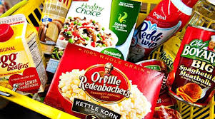
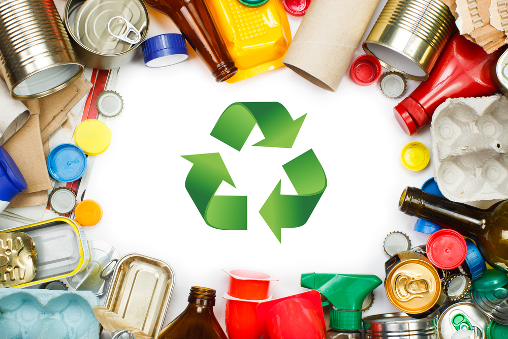

Ensalada de Frutas Frescas
Ingredientes:
- Manzana
- Plátano
- Fresas
- Uvas
- Yogur natural
Ensalada EL CHUY
Ingredientes:
- LECHUGA
- POLLO
- ACEITE DE OLIVA
- PEPINO
- JITOMATES
En la era moderna, la alimentación saludable se ha convertido en un tema de vital importancia. A medida que la conciencia sobre los efectos de la dieta en la salud y el bienestar se expande, surge una preocupación paralela: el exceso de basura que acompaña a nuestros hábitos alimenticios. En esta era de conveniencia y rápida industrialización de los alimentos, nos enfrentamos a una paradoja: mientras buscamos nutrirnos mejor, también generamos montañas de desperdicios no biodegradables. Este trabajo se sumerge en la compleja intersección entre la alimentación saludable y la problemática del exceso de basura. Exploraremos las implicaciones de nuestras elecciones dietéticas en la salud personal y ambiental, así como las estrategias innovadoras para abordar este desafío creciente. Desde la educación sobre nutrición hasta la promoción de prácticas de consumo más sostenibles, este análisis busca arrojar luz sobre cómo podemos cultivar hábitos alimenticios que nutran tanto nuestro cuerpo como el planeta. ¡Bienvenidos a una exploración profunda sobre cómo alimentarnos mejor y generar menos desperdicio!
Conoce la cantidad de basura generada en nuestra escuela y el impacto que tiene en el medio ambiente. Incluir información investigada
Una encuesta reciente en nuestra escuela reveló disparidades en la generación de basura entre sus tres edificios principales. Mientras que el edificio A produjo aproximadamente 300 unidades de basura por semana, el edificio B generó el doble, alrededor de 600 unidades. Por otro lado, el edificio C destacó por su menor producción de basura, con solo 150 unidades por semana. Estos hallazgos destacan la necesidad de implementar medidas para reducir la generación de residuos, incluyendo programas de educación ambiental y prácticas de consumo consciente, con el objetivo de crear un entorno escolar más sostenible y limpio.
| RESULTADOS DE LAS ENCUESTAS | ||
|---|---|---|
| EDIFICIO A | EDIFICIO B | EDIFICIO C |
| APROX:300 | APROX:600 | APROX:150 |
Descubre los beneficios de una alimentación saludable y cómo puede mejorar tu vida y el medio ambiente. Mejora de la salud cardiovascular: Una dieta rica en frutas, verduras, granos enteros y grasas saludables puede ayudar a reducir el riesgo de enfermedades cardíacas al controlar el colesterol y la presión arterial. Control del peso: Una alimentación equilibrada, junto con la práctica regular de ejercicio, puede ayudar a mantener un peso saludable y prevenir la obesidad, lo que reduce el riesgo de muchas enfermedades crónicas. Mayor energía y vitalidad: Consumir alimentos nutritivos proporciona al cuerpo los nutrientes necesarios para funcionar correctamente, lo que puede aumentar los niveles de energía y mejorar el estado de ánimo. Fortalecimiento del sistema inmunológico: Los alimentos ricos en vitaminas, minerales y antioxidantes ayudan a fortalecer el sistema inmunológico, lo que puede ayudar a prevenir enfermedades y reducir la gravedad de las infecciones. Mejora la salud digestiva: Una dieta rica en fibra, como frutas, verduras y granos enteros, puede ayudar a mantener un sistema digestivo saludable y prevenir problemas como el estreñimiento y la enfermedad diverticular. Reducción del riesgo de enfermedades crónicas: Una alimentación saludable puede ayudar a reducir el riesgo de desarrollar enfermedades crónicas como la diabetes tipo 2, ciertos tipos de cáncer y enfermedades neurodegenerativas. Mejora la salud mental: Existe una conexión entre la dieta y la salud mental. Consumir una variedad de alimentos nutritivos puede ayudar a mejorar el estado de ánimo, reducir el estrés y promover la salud mental en general. Promueve una piel sana: Una dieta equilibrada puede ayudar a mantener la piel sana y radiante, proporcionando los nutrientes necesarios para la regeneración celular y la producción de colágeno.
SOPA DE LETRAS| CONCEJOS PARA REDUCIR LA BASURA | ||
|---|---|---|
| CONCEJO | EJEMPLO | IMAGEN |
| Evita productos empacados individualmente | Escoge opciones a granel o en envases grandes y repártelos en recipientes reutilizables en casa. Por ejemplo, compra una bolsa grande de avena en lugar de paquetes individuales de avena instantánea. |  |
| Compra productos de segunda mano | Opta por comprar ropa, muebles y otros artículos de segunda mano en tiendas de segunda mano o a través de intercambios en línea en lugar de comprar productos nuevos que pueden venir con embalajes innecesarios. | |
| Prepara tus propios alimentos | Evita los alimentos procesados y empacados preparando tus propias comidas en casa. Esto no solo reduce los envases, sino que también te permite controlar los ingredientes que consumes. Por ejemplo, prepara bocadillos caseros en lugar de comprarlos en envases individuales. | |
| Utiliza productos reutilizables | Opta por productos reutilizables en lugar de los desechables. Por ejemplo, utiliza servilletas de tela en lugar de servilletas de papel, envolturas de cera de abeja en lugar de papel de aluminio o film transparente, y botellas de agua reutilizables en lugar de botellas de plástico desechables. |  |
Ingredientes:
Ingredientes: